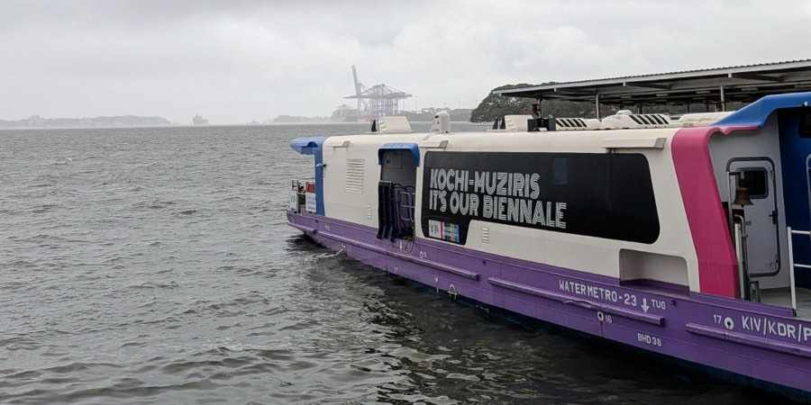

Paradesi Synagogue
Synagogue · Jew Town, Mattancherry
Before you walk over
- Hours
- Sunday to Thursday, 10:00–18:00. Friday, 10:00–14:00. Read from the synagogue's own site, 7 Aug 2026
- Closed
- Every Saturday. Also on seven Jewish holidays in 2026: 2–3 and 8–9 April, 22 May, 23 July, 12–13 September, 20–21 September, 27 September, and 3–4 October. Read from the synagogue's own site, 7 Aug 2026
- Getting there
- 12 minutes on foot from Mattancherry Jetty.
- Entry
- Not published. The synagogue's own site says to ask their staff, and the prices quoted elsewhere disagree with each other. We have not been able to confirm any of them, so carry cash and expect to be told at the gate.
- Step-free entry
- We have not measured the step at the street gate or the threshold at the door, and nobody here has walked it with a wheelchair.
What we only know because we went
-
The holidays close it, and the listings do not say so
Seven dates in 2026, on top of every Saturday. The community publishes them on its own site — and none of them reach the tourism listings, which is where almost everyone checks before walking over.
-
Friday is a short day, not a closed one
It shuts at two on Fridays and stays open to six the rest of the week. Two of our own articles disagreed about this — one had it closed all day Friday — and the venue's own site settled it.
What a photograph will not tell you
- Shoes
- They come off before the prayer hall. There is a rack inside the gate and the floor is tiled, not sand.
- Photographs
- Not allowed inside. Nobody minds in the lane outside, which is where the light is anyway.
- Paying
- Bring cash. The price is not published anywhere and you will be told it at the gate.
- Dress
- Shoulders and knees covered. Nothing is lent at the door, so bring the scarf with you.
It is shut right now
- Paradesi Synagogue · 12 minutes on foot — shut all day — it is a Saturday. Open now: Mattancherry Palace, five minutes further down the same lane, until five.
Why the building looks like that
Ginger here. Look down before you look up — the floor tiles came from China and no two repeat.
The synagogue sits at the closed end of a lane behind the Mattancherry Palace, and the first thing most people notice is that it is smaller than they expected. The clock tower is the tallest part of it and the tower is not the point. The point is the floor: several hundred hand-painted blue and white tiles, carried here from Canton in the middle of the eighteenth century, laid so that no two of them repeat. People walk in, look at the chandeliers, and walk out again without ever looking down.
It is worth arriving with time rather than with a plan. The room is small enough that ten minutes covers it and interesting enough that an hour does not, and the difference between those two visits is entirely a matter of whether anyone told you what to look at. The lane outside is a working street of spice godowns and antique dealers, and the walk in from the jetty is a large part of what you came for, even though nothing on the ticket says so.
Shemeer's verdict. Go in the morning, before the tour groups come through from the palace, and give it longer than it looks like it needs. If the door is shut when you get there, the walk back through the lane is not wasted time.